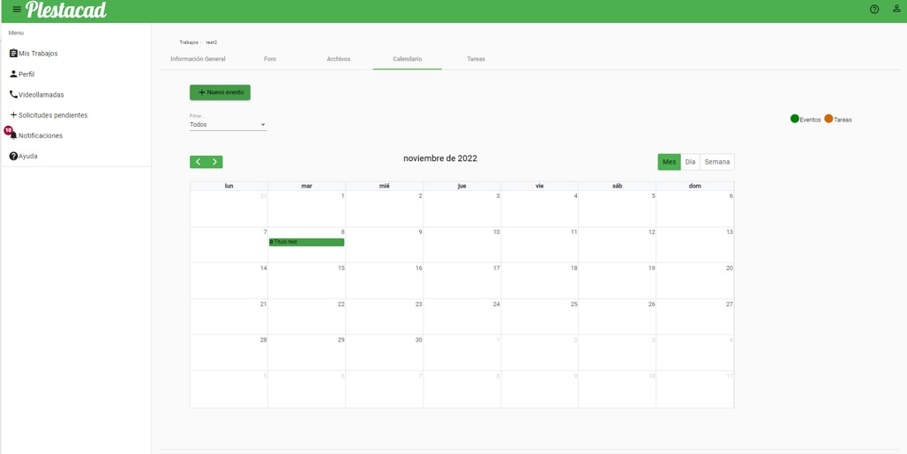

La pantalla de inicio de sesión será la primera pantalla que se visita cuando se accede a la dirección de Plestacad. Esta pantalla constará simplemente de un formulario donde el usuario deberá introducir su correo y su contraseña. También se ofrece la posibilidad de acceder a la pantalla de registro si el usuario no está registrado todavía.
Para poder registrarse en la aplicación es necesario acceder desde el enlace del login, aquí el usuario podrá registrarse indicando: nombre, apellidos, correo electrónico y contraseña. Es necesario que la contraseña tenga una longitud mínima de 8 caracteres y deberá ser introducida correctamente en los dos campos indicados. Desde esta pantalla se podrá acceder en caso de que el usuario esté ya registrado a la pantalla de login desde el enlace del final.
Una vez el usuario ha iniciado sesión por primera vez se mostrará la siguiente pantalla:
Como puede comprobarse el usuario no tiene ningún trabajo académico disponible, por ello el siguiente paso será crear un trabajo académico para ello será necesario pulsar el botón “Crear nuevo trabajo”.
En el diálogo modal que aparece será necesario introducir el título del trabajo, la descripción, la categoría y el curso obligatoriamente. Si se desea invitar a un profesor o un alumno deberá seleccionarse desde el componente indicado:
Desde este componente el usuario podrá filtrar escribiendo el correo del usuario a invitar. Una vez ha seleccionado al usuario deseado deberá pulsar el botón de “Invitar profesor/estudiante” para que el usuario sea invitado al crear el trabajo académico.
Una vez el usuario pulsa el botón de “Crear” visualizará el nuevo trabajo académico creado en su lista.
Cuando el usuario reciba una solicitud de incorporación a un trabajo académico, es decir, haya sido invitado por otro usuario, esta notificación aparecerá en la barra lateral de navegación con un icono rojo indicando el número de solicitudes pendientes que tiene el usuario.
Para ver la lista de solicitudes pendientes es necesario pulsar sobre el botón “Solicitudes pendientes” de la barra lateral de navegación, este redirigirá hasta la página de solicitudes pendientes.
Desde esta página el usuario podrá aceptar o rechazar las solicitudes, en ambos casos el símbolo con el número de notificaciones pendientes en la barra lateral de navegación disminuirá hasta desaparecer conforme vayan gestionándose dichas solicitudes. Para aceptar la solicitud el usuario deberá pulsar el botón verde con un tick y para rechazarla el botón rojo con una cruz.
Para ver la lista de trabajos académicos el usuario deberá acceder pulsando el botón de la barra lateral de navegación “Mis Trabajos” que redirigirá a la lista de los trabajos académicos a los que el usuario pertenece ya sea porque es propietario o porque participa como estudiante o profesor.
El rol del estudiante aparecerá indicado abajo a la derecha de cada uno de los trabajos académicos. Los trabajos que hayan sido archivados aparecerán siempre al final del listado.
Pulsando sobre uno de los trabajos académicos del listado de trabajos académicos se accederá a sus opciones.
Si el usuario es propietario del trabajo la vista será la siguiente:
Se mostrarán los botones para editar la información del trabajo arriba a la derecha y para eliminar y archivar el trabajo al final de la página.
Si el usuario es profesor pero no es propietario del trabajo se mostrará la siguiente vista:
Ya no se permite ni editar los datos del trabajo, ni invitar nuevos miembros ni eliminar/archivar el trabajo académico. Únicamente el usuario podrá eliminarse a sí mismo, es decir, abandonar el trabajo académico.
El usuario marcado con una estrella amarilla hace referencia al propietario del trabajo académico.
Si el profesor es estudiante se mostrará la siguiente pantalla:
De la misma manera que antes el usuario estudiante solo podrá eliminarse a sí mismo, saliendo del trabajo académico.
Para editar la información de un trabajo académico el usuario propietario deberá pulsar el botón con forma de lápiz de la parte superior derecha de la información.
Este botón hará que los campos de la información sean editables y con el botón “Guardar cambios” guardará los cambios realizados.
Para invitar nuevos miembros a un trabajo académico el usuario propietario deberá pulsar el botón “Invitar nuevos miembros” lo que hará aparecer el diálogo modal para invitar nuevos miembros al trabajo académico.
El funcionamiento de este diálogo es similar al que aparece en la creación del trabajo académico en el apartado de creación de trabajos académicos.
Para archivar un trabajo académico el usuario propietario del trabajo académico deberá pulsar el botón “Archivar trabajo académico” situado al final de la página.
Cuando el usuario pulse sobre dicho botón aparecerá un diálogo de confirmación:
Si el usuario pulsa “Sí” el trabajo académico pasará a estar archivado y se mostrará al final de la lista de trabajos académicos del usuario.
Ahora en el menú de opciones aparecerá la opción de “Desarchivar trabajo académico” cuya funcionalidad es similar a la anterior:
La funcionalidad de eliminar un trabajo académico será similar a la de archivarlo, cuando el usuario acepte el diálogo de confirmación, el trabajo académico y todos sus recursos serán eliminados del sistema. Dicha acción no se puede deshacer.
Si el usuario entra por primera vez al foro y no existen temas se mostrará el siguiente contenido.
Para acceder al foro de un trabajo académico el usuario debe haber accedido previamente a un trabajo académico. Una vez haya realizado esto deberá navegar al apartado de foro a través del menú de pestañas.
Para crear un nuevo tema el usuario deberá pulsar el botón “Nuevo tema” en la pantalla anterior de listado de temas. Se abrirá un diálogo modal donde el usuario deberá especificar un título obligatorio y un contenido del tema.
Una vez el usuario pulse el botón “Crear” se creará el nuevo tema y se mostrará en la lista de temas del foro
Una vez un usuario haya creado un tema en el foro podrá ver su contenido accediendo desde la lista de temas del foro. Para acceder deberá bien pulsar el título del tema o el botón de respuestas del tema.
Una vez el usuario haya accedido se mostrará la información del tema y las respuestas al mismo.
Una vez se ha accedido a un tema utilizando la sección del editor de texto inferior el usuario podrá escribir una respuesta al tema. Pulsando el botón “Comentar” se enviará la respuesta.
Un usuario solo podrá eliminar aquellas respuestas que ha escrito él utilizando el botón con forma de papelera de la parte derecha de la respuesta. Se mostrará un diálogo de confirmación que deberá aceptar para eliminar la respuesta.
Para marcar un tema como favorito el usuario tendrá que pulsar sobre el botón con forma de corazón del tema mostrado en la lista de temas.
Para desmarcar un tema como favorito el usuario deberá pulsar el mismo botón que ahora se encontrará relleno.

Para eliminar un tema el usuario deberá pulsar el botón que dice “Eliminar” a la derecha del tema. El usuario deberá confirmar la eliminación con el botón “Sí” de la pantalla de confirmación que aparece.
Para acceder a la gestión de archivos de un trabajo académico el usuario deberá ir a través del menú de pestañas tras acceder a un trabajo académico. Por defecto y tras haber creado el trabajo académico se mostrará así:
Únicamente aparece un directorio con el nombre del trabajo académico creado.
Para crear un directorio es necesario pulsar el botón con forma de carpeta que se encuentra a la derecha del directorio raíz. Tras esto aparecerá una pantalla dónde se solicitará el nombre del directorio a crear.
Cuando se pulse el botón “Crear” tras haber introducido un nombre se creará el directorio indicado.
Para subir un nuevo archivo a la plataforma es necesario pulsar el botón con forma de archivo a la derecha en el menú de opciones. Dependiendo de en qué directorio lo pulsemos se subirá en uno u otro directorio.
Tras esto aparecerá la siguiente ventana modal que solicitará al usuario subir un nuevo archivo. Deberá pulsarse el botón con forma de clip y el usuario deberá seleccionar de su ordenador el archivo a subir con un tamaño menor a 20MB.
Una vez se pulse el botón “Subir” aparecerá el nuevo archivo subido:
Para descargarse un archivo subido el usuario deberá pulsar el botón con forma de flecha hacia abajo, una vez haga esto el navegador descargará el archivo en su carpeta de descargas por defecto.
Para eliminar un directorio deberá pulsarse el botón con forma de papelera de su derecha, es necesario que un directorio este previamente vacío, sin ningún archivo en su interior, si se intenta eliminar un directorio con algún archivo o directorio en su interior surgirá el siguiente problema.
Para eliminar un archivo el procedimiento es el mismo que el anterior, pulsando el botón con forma de papelera de la derecha.
Para acceder a la sección del calendario el usuario deberá pulsar en el menú de pestañas de un trabajo académico la opción “Calendario”. El calendario por defecto en un trabajo académico aparecerá vacío de la siguiente manera:
Para crear un nuevo evento el usuario tiene dos alternativas, pulsar sobre un día del calendario o pulsar el botón “Nuevo evento”, ambos tienen el mismo comportamiento.
Para crear un evento el usuario deberá cumplimentar obligatoriamente el título, y la fecha de inicio.
La fecha de fin es opcional, si no se rellena el evento finalizará al terminar el día.
Se pueden asignar tags o categorías al evento para clasificarlo por defecto se muestran las siguientes que son seleccionables:
Sin embargo el usuario puede crear su propia categoría escribiendo el nombre que quiera y pulsando la tecla enter.
Una vez el usuario ha terminado de introducir los datos del evento debe pulsar el botón “Crear” para finalizar la creación.
Una vez el usuario ha creado un evento estos pueden visualizarse en el calendario el día en que fueron asignados.
El usuario puede cambiar la vista pulsando en los botones “Mes”, “Día” y “Semana”.
La vista de día es la siguiente:

La vista de semana es la siguiente:
Si el calendario tiene eventos relacionados con tareas, estos se mostrarán en color naranja, si el usuario intenta modificar alguno de estos eventos relacionados con tareas se mostrará el siguiente mensaje de error:

Para modificar un evento el usuario puede pulsar sobre el mismo en el calendario en cualquiera de las vistas seleccionables.
Se cargarán los datos del evento que el usuario podrá modificar y guardar pulsando el botón “Actualizar”.
El usuario también dispone de otras opciones para modificar los eventos como arrastrarlos por el calendario o estirarlos usando el ratón.
Para acceder a la gestión de tareas el usuario deberá utilizar el botón de pestañas con título “Tareas” tras haber accedido a un trabajo académico.
La vista por defecto en un trabajo recién creado será la siguiente:
Para crear una nueva tarea el usuario deberá pulsar el botón “Nueva tarea”. Se mostrará la siguiente ventana:
El usuario deberá introducir obligatoriamente el título de la tarea únicamente.
Opcionalmente el usuario podrá incluir la descripción, la fecha de inicio y de fin, cambiar la clasificación de la tarea y cambiar el usuario al cual estará asignada (será una lista de los usuarios del trabajo académico).
Si el usuario introduce una fecha de inicio y de fin en una tarea esta generará un evento en el calendario.
Para visualizar la lista de tareas deberá accederse a la pestaña inferior “Lista” dentro del submenú de tareas, si el trabajo tiene una o varias tareas creadas la lista se mostrará en una tabla de la siguiente manera:
Desde las filas de la tabla el usuario podrá cambiar la clasificación de estas o acceder a la modificación de la tarea mediante el botón en forma de rueda de ajustes.
Para clasificar una tarea el usuario tiene varias posibilidades, hacerlo desde la propia tabla de tareas, desde la rueda de ajustes o accediendo al tablero de tareas.
Para acceder al tablero de tareas el usuario deberá pulsar la pestaña “Tablero”, que se mostrará de la siguiente manera:
Aquí se muestran las tareas clasificadas en apartados de clasificación de tareas, el usuario puede clasificar las tareas en los distintos apartados pulsando sobre ellas y arrastrándolas al apartado deseado.
Para crear un nuevo apartado de clasificación de tareas el usuario deberá pulsar sobre el botón “Añadir nueva sección” en la pestaña de “Tablero”. Cuando el usuario pulse dicho botón se creará un nuevo apartado y permitirá al usuario modificar su título pulsando sobre él.
Para modificar un apartado de clasificación de tareas el usuario solo tendrá que pulsar en el título que quiera modificar y cambiarlo por el título nuevo que desee.
Si el usuario desea mover un apartado de clasificación de tareas con todo su contenido a otra posición se puede realizar pulsando el menú que tienen a la derecha después del título.
Desde el submenú “Posición” podrá seleccionarse la posición a la que se quiere mover.
Si el usuario desea eliminar un apartado de clasificación de tareas solo deberá pulsar la opción “Eliminar” en el menú mostrado en el apartado anterior.
Si un usuario elimina un apartado de clasificación de tareas con tareas incluidas en él, estas quedarán sin clasificación.
Para modificar una tarea el usuario podrá pulsar en ella directamente desde la opción de “Tablero” o podrá pulsar la rueda de ajustes desde la opción de “Lista”. Ambas opciones derivan en la siguiente pantalla:
Desde aquí el usuario podrá cambiar los datos de los campos del formulario al igual que cuando fue creada. Con el botón “Actualizar” se guardarán los cambios del usuario.
Para eliminar una tarea el usuario podrá pulsar en ella directamente desde la opción de “Tablero” o podrá pulsar la rueda de ajustes desde la opción de “Lista”. Ambas opciones derivan en la pantalla que se mostró en el apartado anterior. Con el botón superior de la derecha con forma de papelera se puede eliminar la tarea creada.
El usuario podrá consultar su perfil accediendo a la opción “Perfil” del menú lateral de navegación o desde el menú superior pulsando su foto de perfil y en la opción “Mi perfil”.
El aspecto del perfil del usuario será algo similar a lo siguiente:
Desde aquí el usuario podrá cambiar su foto de perfil, actualizar sus datos y su contraseña.
Para actualizar su nombre y apellidos el usuario simplemente tendrá que escribir los nuevos y pulsar el botón “Actualizar datos”.
Para cambiar la contraseña deberá escribir su contraseña actual y la nueva contraseña dos veces, esta deberá tener longitud mayor a 8.
Para cambiar su foto de perfil deberá pulsar sobre el botón con forma de clip, seleccionar una foto desde su ordenador y pulsar el botón “Actualizar foto”. En la captura se muestra la foto por defecto del usuario cuando se registra.
Para acceder a las opciones de videollamadas el usuario deberá pulsar la opción “Videollamadas” del menú lateral de navegación.
La lista de contactos del usuario se mostrará al entrar a la opción de videollamadas. Desde aquí el usuario verá sus contactos (usuarios con los que comparte un trabajo académico) y podrá llamarlos pulsando el botón con forma de teléfono de su derecha.
Podrá filtrar el nombre del usuario utilizando el componente de búsqueda superior.
Si un usuario se encuentra conectado aparecerá con un circulito verde como en la imagen anterior. Si el usuario se encuentra desconectado aparecerá con un circulito gris.
Para iniciar una videollamada con uno de sus contactos se requiere que este se encuentre online. El usuario deberá pulsar el botón con forma de teléfono, una vez esto ocurra deberá aceptar los permisos de audio y vídeo en una pantalla que variará dependiendo del navegador pero será similar a esta.
Para aceptar una llamada entrante el usuario deberá haberse conectado previamente y otro usuario deberá haber iniciado una videollamada con él. Cuando el usuario reciba una llamada entrante independientemente de la parte de la aplicación en la que se encuentre aparecerá el siguiente cuadro de diálogo.
Para aceptar la videollamada entrante el usuario deberá pulsar el icono con el teléfono verde y para rechazarla el icono con el teléfono rojo.
Si el usuario que está en una llamada en curso decide dejar de compartir su audio o su señal de vídeo deberá pulsar el botón con forma de micrófono o el botón con forma de cámara.
Para volver a compartir estos recursos deberá volver a pulsarlos.
Para terminar una llamada en curso el usuario deberá pulsar el botón con el icono del teléfono rojo. Esto pondrá fin a la llamada.
Cuando llegue una notificación al usuario esta se mostrará con un icono rojo sobre la barra lateral de navegación. Dicho icono contendrá el número de notificaciones que el usuario tiene pendientes.
Para consultar las notificaciones el usuario deberá pulsar sobre dicha opción y la aplicación le redirigirá a la pantalla de consulta de notificaciones.
Una vez aquí el usuario podrá filtrar las notificaciones por trabajo académico. El usuario podrá acceder al trabajo académico en el cual se ha producido la notificación pulsando el enlace que la acompaña.
Para marcar una notificación como leído el usuario podrá utilizar el botón con forma de tick de la derecha de la notificación.
Para marcar todas las notificaciones como leído puede pulsar el botón “Marcar todo como leído”.
Una vez el usuario ha marcado todas las notificaciones como leído la pantalla se mostrará de la siguiente manera:
Para desconectarse de la aplicación el usuario deberá pulsar el botón superior con su foto de perfil (en caso de que la tenga) o con el icono de usuario por defecto y pulsar el botón “Desconectarse”.